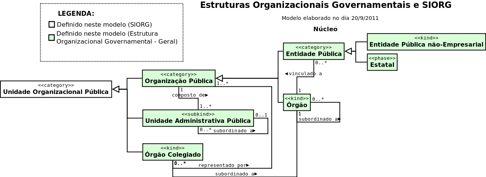
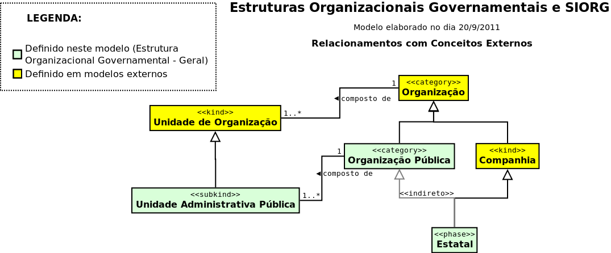
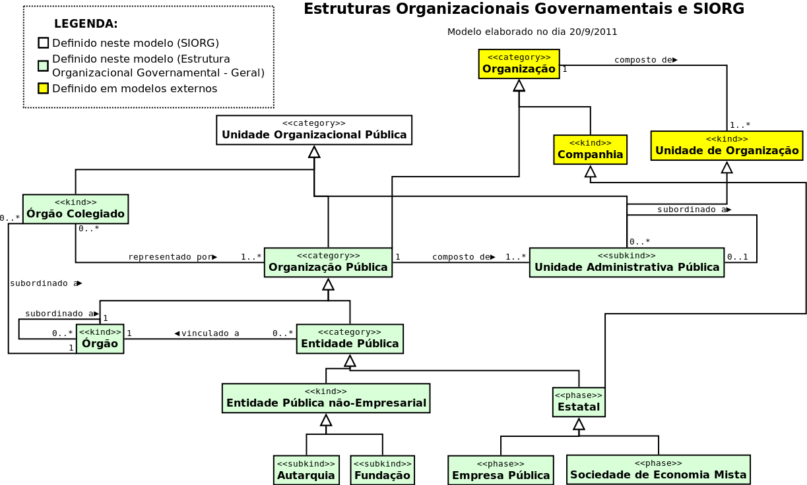

Introdução
Este documento é o resultado das discussões acerca do tema Estruturas Organizacionais Governamentais e o SIORG, abordados durante três reuniões, nos dias 8, 13 e 20 de setembro de 2011, entre participantes da Secretaria-Executiva (SE) e das Secretarias de Gestão (SEGES) e de Logística e Tecnologia da Informação (SLTI).
Esta modelagem não pretende ser uma posição oficial do Ministério do Planejamento sobre o assunto, e nem representar um consenso institucional, mas tão somente servir de um ponto de partida para as discussões futuras e uma evolução do modelo. O estado atual do modelo, representado aqui, representa apenas o consenso dos participantes na data da última reunião sobre os assuntos discutidos.
Houve a preocupação de não só em representar os conceitos necessários ao SIORG, como também em se desenvolver um modelo que fosse geral o suficiente para permitir o seu reaproveitamento em futuras modelagens conceituais de estruturas organizacionais governamentais em outras esferas e outros poderes da administração pública no Brasil. Outra diretriz foi a de relacionar, sempre que possível, as classes e propriedades aqui definidas com ontologias internacionalmente utilizadas pelas comunidades de prática em Web Semântica e Linked Data.
Participantes
Participaram das reuniões e discussões sobre o modelo os seguintes servidores:
- Augusto Herrmann Batista – SLTI;
- Christian Moryah Contiero Miranda – SLTI;
- Danilo Barreto de Araujo – SLTI;
- Frederico Porto de Souza – SEGES;
- Nitai Bezerra da Silva – SLTI;
- Renan Mendes Gaya Lopes do Santos – SE;
- Valter Muchagata – SEGES
Trabalhos relacionados
Foram considerados os trabalhos de modelagem de ontologias de estruturas organizacionais governamentais dos governos dos Estados Unidos da América (FEA-RMO) e do Reino Unido (Central Government Ontology).
Federal Enterprise Architecture Reference Model Ontology (EUA)
O primeiro, chamado Federal Enterprise Architecture Reference Model Ontology (em tradução livre, Ontologia de Modelo de Referência da Arquitetura Corporativa Federal), foi desenvolvido pela empresa Top Quandrant para o governo dos EUA, em 2005. O desenvolvimento da FEA-RMO teve foco principal na Web Semântica e nos recursos de expressividade que a linguagem de ontologias da web (OWL) e seu modelo de inferências permite representar. O modelo também partiu de uma arquitetura corporativa já documentada, FEA, para então representá-la num modelo ontológico formal. Essa arquitetura se divide em um núcleo, cinco perspectivas (modelos de referência) sobre a estrutura organizacional e modelos de “ponte” que fazem os mapeamentos entre estas. O núcleo não é explicitamente definido na arquitetura original, mas foi explicitada na modelagem OWL a partir de conceitos e propriedades comuns entre as cinco perspectivas, que são: aferição de desempenho, negócio, componente de serviço, tecnologia e dados. O trabalho antecede o movimento internacional em favor do conceito Linked Data e, talvez por isso, não defina identificadores (URIs) canônicos para as classes e propriedades. Foram utilizadas no documento OWL identificadores locais.
Central Government Ontology (Reino Unido)
O modelo de estrutura organizacional do governo do Reino Unido se deu durante o desenvolvimento do projeto de Linked Data para o portal data.gov.uk, que também desenvolveu ontologias para outras áreas de governo. Sendo assim, ele define identificadores (URIs), baseados no esquema HTTP, para as classes e propriedades que define. Esses identificadores, quanto acessados, retornam um documento com informações relevantes ao conceito identificado, seguindo as boas práticas de Linked Data. Além disso, referenciam conceitos de ontologias externas que são utilizadas pelas comunidades de prática (e.g., FOAF, Dublin Core, VOID, SKOS, ontologia de organizações do W3C, etc.).
Núcleo do modelo
A modelagem abaixo representa apenas os conceitos-chave, numa visualização que visa facilitar o entendimento do modelo.
Referências Externas do Modelo
O modelo a seguir representa apenas os conceitos que podem ser relacionados com outros conceitos existentes em ontologias externas, o que pode vir a evidenciar potenciais pontos de integração com essas ontologias.
Modelo Completo
A modelagem abaixo pretende representar a completude dos conceitos discutidos no âmbito das reuniões.
Modelo Conceitual
Escopo:
Realizar uma modelagem conceitual dos conceitos do SIORG, especificando também e ligando conceitos gerais acerca de Estruturas Organizacionais Governamentais o suficiente para possibilitar a interoperabilidade com outras esferas e poderes de governo.
Não-escopo:
Nesse primeiro momento da modelagem não estão sendo consideradas as mudanças na estrutura organizacional ao longo do tempo.
Perguntas-requisito:
As perguntas requisito (também conhecidas como “competency questions”) são perguntas às quais deve ser possível responder com os dados representados no modelo. As seguintes perguntas devem ser respondidas por uma modelagem do SIORG:
- Qual é o nome de uma unidade hierárquica governamental?
- Qual é a sigla de uma unidade hierárquica governamental?
- Quais são as competências legais de uma unidade hierárquica governamental?
- Qual diploma legal criou a unidade hierárquica governamental?
- De que maneira uma unidade hierárquica governamental se relaciona hierarquicamente com outras atualmente no governo federal?
- Quais organizações públicas estão representadas em um órgão colegiado?
- A qual organização pública um órgão colegiado está vinculado?
- A qual Órgão uma Entidade Pública está vinculada?
Conceitos:
- Unidade Organizacional Pública:
- “Unidade formal da Administração Pública, criada por instrumento normativo específico de estrutura regimental, constituinte de estrutura hierarquizada.” É uma categoria que agrega tanto organizações quanto as unidades que a compõem, de maneira a permitir uma visão integrada da hierarquia no governo.
- Organização Pública:
- “Unidade orgânica da Administração Pública, provida de estrutura hierarquizada, com a prerrogativa de propor alterações na sua própria estrutura organizacional.” No poder executivo federal, pode ser considerada extensionalmente equivalente ao conjunto de unidades no SIORG que têm o atributo organização com o valor “O”.
- Órgão:
- “Organização Pública que faz parte da Administração Direta, tais como, na esfera federal, os Ministérios”.
- Entidade Pública:
- “Organização Pública com personalidade jurídica própria, autonomia administrativa e financeira”.
- Entidade Pública não-Empresarial:
- “Organização Pública com personalidade jurídica própria, mas que não pode ser caracterizada como uma empresa, tais como Autarquias e Fundações.”
- Autarquia:
- “O serviço autônomo, criado por lei, com personalidade jurídica, patrimônio e receita próprios, para executar atividades típicas da Administração Pública, que requeiram, para seu melhor funcionamento, gestão administrativa e financeira descentralizada. (Decreto-Lei 200/1969, art. 5º, inciso I)”
- Fundação Pública:
- “A entidade dotada de personalidade jurídica de direito privado, sem fins lucrativos, criada em virtude de autorização legislativa, para o desenvolvimento de atividades que não exijam execução por órgãos ou entidades de direito público, com autonomia administrativa, patrimônio próprio gerido pelos respectivos órgãos de direção, e funcionamento custeado por recursos da União e de outras fontes. (Decreto-Lei 200/1969, art. 5º, inciso IV)”
- Estatal:
- “Organização Pública com personalidade jurídica própria, e que possui características de empresa, tais como Empresas Públicas e Sociedades de Economia Mista.”
- Empresa Pública:
- “A entidade dotada de personalidade jurídica de direito privado, com patrimônio próprio e capital exclusivo da União, criado por lei para a exploração de atividade econômica que o Governo seja levado a exercer por força de contingência ou de conveniência administrativa podendo revestir-se de qualquer das formas admitidas em direito. (Decreto-Lei 200/1969, art. 5º, inciso II)”
- Sociedade de Economia Mista:
- “A entidade dotada de personalidade jurídica de direito privado, criada por lei para a exploração de atividade econômica, sob a forma de sociedade anônima, cujas ações com direito a voto pertençam em sua maioria à União ou a entidade da Administração Indireta. (Decreto-Lei 200/1969, art. 5º, inciso III)”
- Órgão Colegiado:
- “Por Órgão Colegiado entende-se aquele que tem composição pluripessoal, constituído por representantes de órgãos ou entidades do Poder Público e, se for o caso, também de entidades privadas. Não possui estrutura formal, sendo que os seus serviços de secretaria executiva são, obrigatoriamente, providos por unidades administrativas já integrantes da estrutura de algum de seus representantes.”
- Unidade Administrativa Pública:
- “Unidade formal integrante da Administração Pública, criada por instrumento normativo específico de estrutura regimental. A Unidade Administrativa Pública é parte de uma Organização Pública, dela depende existencialmente, e só tem amplo reconhecimento dentro do contexto dessa Organização.” É uma especialização de org:OrganizationalUnit.
Relacionamentos:
- Composição
- Subordinação
- Vinculação “forte”
- Vinculação “fraca”
- Supervisão
- Descendência hierárquica:
- superpropriedade de todas as acima, que se manifesta apenas no momento em que se pretende exibir a hierarquia de Unidades Hierárquicas Governamentais, tal como no SIORG.
Ligações com Conceitos Externos:
Seguem alguns conceitos definidos em ontologias externas que são candidatos a ligação com a ontologia de Estruturas Organizacionais Governamentais.
Organização:
umbel:Organization “The collection of all organizations. Each instance of Organization is a group whose group-members are instances of IntelligentAgent. In each instance of Organization, certain relationships and obligations exist between the members of the organization, or between the organization and its members. Instances of Organization include both informal and legally constituted organizations. Each instance of Organization can undertake projects, enter into agreements, own property, and do other tasks characteristic of agents; consequently, Organization is a specialization of the collection Agent_PartiallyTangible. Notable specializations of Organization include LegalGovernmentOrganization, CommercialOrganization, and GeopoliticalEntity.”
foaf:Organization “The Organization class represents a kind of Agent corresponding to social instititutions such as companies, societies etc.”
org:FormalOrganization “An Organization which is recognized in the world at large, in particular in legal jurisdictions, with associated rights and responsibilities. Examples include a Corporation, Charity, Government or Church. Note that this is a super class of `gr:BusinessEntity` and it is recommended to use the GoodRelations vocabulary to denote Business classifications such as DUNS or NAICS.”
Companhia:
umbel:CommercialOrganization “A specialization of Organization. Each instance of CommercialOrganization is an organization whose primary goal is to generate a profit for its owners, usually through the buying and selling of goods or services. A given instance of CommercialOrganization may also be an instance of Business, or it may merely be a sub-organization of some instance of Business.”
goodrelations:BusinessEntity “An instance of this class represents the legal agent making (or seeking) a particular offering. This can be a legal body or a person. A business entity has at least a primary mailing address and contact details. For this, typical address standards (vCard) and location data (geo, WGS84) can be attached. Note that the location of the business entity is not necessarily the location from which the product or service is being available (e.g. the branch or store). Use gr:Location for stores and branches. Example: Siemens Austria AG, Volkswagen Ltd., Peter Miller's Cell phone Shop LLC”
Unidade de Organização:
umbel:AdministrativeUnit “A sub-collection of (SubcollectionOfWithRelationFromTypeFn Organization subOrganizations Organization). Each instance is a unit with administrative responsibilities.”
org:OrganizationalUnit “An Organization such as a University Support Unit which is part of some larger FormalOrganization and only has full recognition within the context of that FormalOrganization, it is not a Legal Entity in its own right. Units can be large and complex containing other Units and even FormalOrganizations. Alternative names: _OU_ _Unit_ _Department_” (obs.: referenciado pela Central Government Ontology, do Reino Unido)
Unidade Organizacional (SIAPE):
a definir em ontologia específica.
Unidade Orçamentária (SIAFI):
a definir em ontologia específica.
Questionamentos:
- Empresas públicas e sociedades de economia mista têm sua composição hierárquica determinada por Lei? Possuem autonomia para propor alterações na sua estrutura interna? Essa informação é necessária para modelar o conceito de “composição legal”, existente na modelagem anterior, que permitiria armazenar o histórico da hierarquia. Se a composição histórica da estrutura organizacional for um requisito, precisaremos dessa resposta.
Próximos passos:
- Evoluir do modelo para possibilitar a representação de alterações na estrutura organizacional no decorrer do tempo, possibilitando o registro do histórico;
- implementação e disponibilização em OWL;
- modelar interseções do modelo com domínios dos sistemas estruturantes (ex.: SIAPE, SIAFI, SIOP, SICONV, etc.).